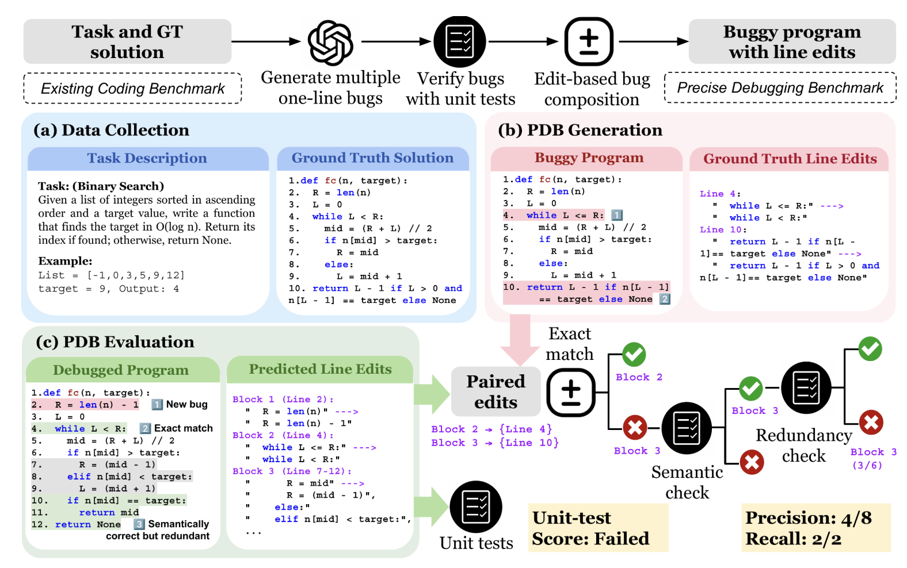
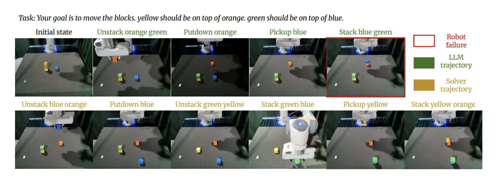
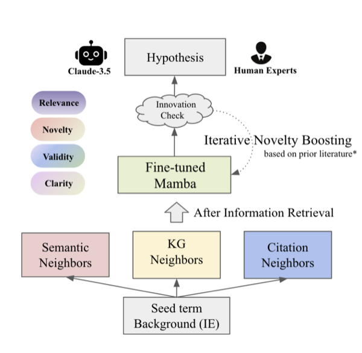

Miaosen ChaiI'm an incoming PhD student at University of Chicago, advised by Prof. Chenhao Tan. I'm interested in the science of foundation model training and building AI Scientist system that trains the next generation of AI by democratizing the scientific discovery process. Previously, I received my B.S. in Computer Science from USC, where I had a wonderful time as an undergraduate researcher advised by Prof. Robin Jia, Prof. Willie Neiswanger, and Prof. Jesse Thomason.
In industry, I spent some time as a researcher at
Oak Ridge National Lab
and
Feel free to reach out if you want to chat! |

News
|
Research (* indicates equal contribution) |
|
 |
Precise Debugging Benchmark: Is Your Model Debugging or Regenerating?Miaosen Chai*, Wang Bill Zhu*, Shangshang Wang, Yejia Liu, Song Bian, Honghua Dong, Willie Neiswanger, Robin Jia arXiv preprint, 2026 arXiv / Code / Website / BibTeX A plug-and-paly data engine and benchmark for distinguishing whether a model truly debugs an existing program or simply regenerates it, disentangling repair capability from code generation with new edit-level metrics. |
|
 |
PSALM-V: Automating Symbolic Planning in Interactive Visual Environments with Large Language ModelsWang Bill Zhu, Miaosen Chai, Ishika Singh, Robin Jia, Jesse Thomason ICRA 2026 arXiv / Website / BibTeX PSALM-V automates the induction of symbolic planning models directly from interactive visual environments, letting LLM-driven agents plan reliably without hand-crafted symbolic language for robotics. |
|
 |
Exploring Scientific Hypothesis Generation with MambaMiaosen Chai*, Emily Herron*, Erick Cervantes, Tirthankar Ghosal NLP4Science @ EMNLP 2024 Anthology / Code / BibTeX An early exploration of state-space models for open-ended scientific hypothesis generation, examining how Mamba compares to transformer baselines on grounded scientific text. |